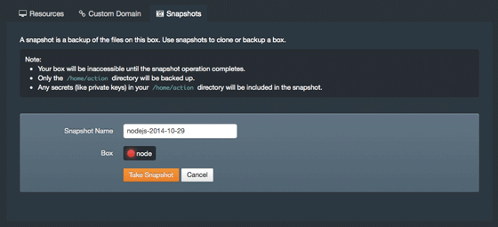
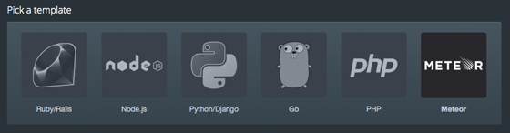
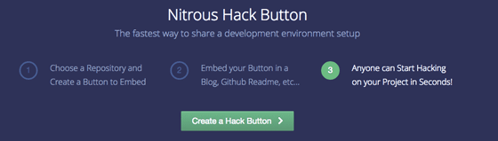

Announcing Box Snapshots
We're excited to announce our latest feature: Box Snapshots.

With snapshots, you can set your own custom starting point for new boxes. If you're a consultant, this means you can start each new project with a clean environment pre-configured just the way you like it. If you teach a class, you can start with a master template and duplicate it for each of your students. And finally, if you're a fast growing startup making changes to the Dev stack regularly, you can keep your team happy and ship faster by capturing and sharing an entire Development Environment with the whole team at the click of a button.
Nitrous.IO Box Snapshots are available on the Shift and Turbo plans.
Meteor Development Becomes Even Simpler
Congratulations to the Meteor team for reaching 1.0! It has been exciting to witness the amazing progress their team has made on the framework. We've supported many thousands of Meteor developers on Nitrous.IO and are only seeing those numbers skyrocket as Meteor approached its 1.0 release.
To celebrate the 1.0 milestone we've added a custom Meteor template to our box creation page. When creating a new box you will see an option to select a Meteor template.

Simply select the Meteor template to create a development environment with Meteor 1.0 installed. Take a look at Meteor's new guide to build your first Meteor app using 1.0.
Want to get started? Head over to Nitrous and setup your Meteor app!
More Storage and Memory for Everyone
To give everyone the best Nitrous.IO experience, we've increased the N2O levels for all accounts. When creating a new box you will notice that the new base configuration includes 512MB of memory and 1.5GB of storage. This prevents any bottlenecks that you may encounter when starting a new project.
Want to increase your existing box's resources? Read our guide on increasing storage and memory.
Most Popular Hack on Nitrous Repos
We launched Hack on Nitrous.IO in April and were surprised by the groundswell of support and adoption from various partners and open source projects. Almost 3000 individual repos were cloned over 6000 times using an embedded hack button in the project repo on GitHub or the Bookmarklet.

Read the blog post to find out most popular projects that Nitrous.IO users cloned over the last six months.
|